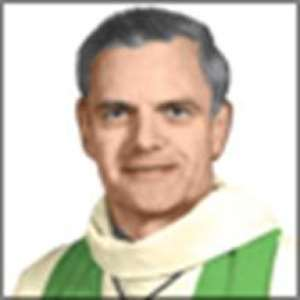
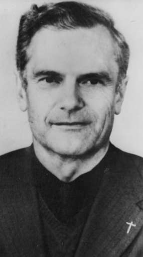

On se demandera peut-être pourquoi je reviens, après plus de trente ans, sur une affaire passée inaperçue à l’époque et toujours inconnue aujourd’hui. Il est même à craindre que certain(e)s voient dans mon initiative une provocation. Voici les faits.
L’épisode douloureux que j’évoque ci-après remonte aux années 1980 du siècle passé. Je l’ai tu jusqu’à ce jour, par discrétion d’abord, mais surtout pour éviter toute instrumentalisation de l’événement par des personnes malveillantes à l’affut de tout ce qui peut faire du tort à l’Église. Si j’ai finalement décidé de le dévoiler, c’est pour illustrer la nature, à la fois théologique et socio-culturelle, du débat qui fait rage ces derniers mois et enfle au point de diviser les plus hautes autorités ecclésiales, à propos d’un passage du document papal Amoris Laetitia 1.
Mais revenons aux années 1980. Alors que, depuis des mois, je militais (le mot n’est pas trop fort), contre vents et marées (catholiques) mais en dialogue avec le primat de mon diocèse, en faveur de la cause des divorcés remariés, je reçus d’un prêtre qui m’était totalement inconnu, le bref billet suivant que je transcris ici verbatim:
Père LOUIS KUEHN Ce 6. 07. 88 Monsieur J’ai lu avec beaucoup d’intérêt votre article du "Supplément" de juin 1988 sur l’admission provisoire des Lapsi par Cyprien, et les divorcés remariés [2]. Évêque de Meaux jusqu’en octobre 1986, j’avais mis en place une ‘pratique’ au sujet de l’admission à l’Eucharistie des divorcés remariés... Vous trouverez ci-joints 2 textes qui peuvent intéresser votre dossier: - une circulaire envoyée aux prêtres le 30 juin 1977, - une lettre que j’envoyais aux intéressés après les avoir reçus. Mais je voulais surtout vous dire mon entière approbation aux ouvertures suggérées dans votre article, et mon merci pour cette recherche fort intéressante. Bien à vous [signé] Louis KUEHN Très ému, je réagis promptement, en adressant à cet interlocuteur inattendu un numéro de la revue que j’avais créée alors et un projet d’état de vie pénitentiel que j’avais élaboré pour tenter de toucher le cœur des hautes autorités magistérielles. Voici la réponse de l’ecclésiastique, d’autant plus édifiante à mes yeux qu’une meilleure connaissance des motifs de sa démission témoignait de sa fidélité tant à son Église qu’à la part souffrante spécifique de son troupeau: les divorcés remariés.
Père Louis Kuehn B. P. 375 25207. Montbéliard - cedex Montbéliard, le 6. 09. 88 Cher Monsieur C’est avec beaucoup d’intérêt que j’ai lu votre lettre du 21 juillet dernier, et le n° 10 de "Votre Consolateur" [3]. (1) Avant de vous donner mon avis à ce sujet, j’aimerais vous préciser le point de départ de ma position personnelle, qui a abouti à ma note aux prêtres de mon diocèse, suite à une session sur le sacrement de mariage (note du 30. 06. 77), dont vous trouverez l’essentiel dans l’ouvrage de Michel Legrain sur les "divorcés remariés" page 185. Je me situais alors comme Évêque diocésain participant à la fonction magistérielle de l’Église (ce qui n’est évidemment pas votre cas). A) - Ma conviction intime est que la loi de l’Église interdisant de façon rigoureuse l’admission aux sacrements de Pénitence et d’Eucharistie de tout divorcé remarié, repose sur une mauvaise théologie [‘mauvaise’ souligné 2 fois] du Mariage, et de la vie sacramentaire en général. - Toutes sortes de travaux renforcent ma conviction, par ex., ceux de Michel Legrain, mais aussi le congrès de l’A. T. E. M. ou le congrès des canonistes à Strasbourg de 1986 (dont la Revue de droit canonique de Strasbourg a rendu compte en 1987). B) Je suis persuadé aussi que la solution qui consiste à demander aux divorcés remariés, dont la situation est irréversible, de s’abstenir de toute relation sexuelle s’appuie sur une anthropologie malsaine [‘malsaine’ souligné 2 fois] (pour reprendre une de vos expressions) C) Dans ces différents domaines (et par rapport à d’autres positions magistérielles sur les questions d’éthique sexuelle), nous constatons que les éléments les plus sains du Peuple de Dieu ne "reçoivent" pas ces décisions, en donnant son sens technique, en théologie, à ce terme de "réception"). Cela doit faire réfléchir sérieusement le Magistère.
D) Évêque diocésain, j’avais un devoir grave d’alerter Rome et les Évêques français sur le caractère néfaste, à mon avis, de cette loi. Mais je suis solidaire du corps épiscopal et du Pape. J’ai toujours pensé que je ne devais rien entreprendre, par la parole publique ou par l’action, qui semblerait aller "contra legem", tant que cette loi n’était pas revue. E) J’ai pensé pouvoir trouver une solution, provisoire en tout cas, en m’appuyant sur le décret "Christus Dominus" § 38 b (repris par le Code de droit canonique de 1983 (canon 87). Dans le cas d’urgence pastorale, un Évêque diocésain peut accorder une exception aux lois disciplinaires de l’Église universelle, pour des cas particuliers 4. D’où mes dispositions du 30.06.77 (approuvées à l’époque par les Évêques de la Région Ile-de-France). - Vous avez noté, je pense, que je prévoyais entre autres une démarche pénitentielle portée par une "équipe" de chrétiens au courant de la situation. Rome m’a manifesté son désaccord; les Évêques de la Région Ile-de-France eux- mêmes m’ont pratiquement désavoué... Comme cette question devenait pour moi un grave cas de conscience, j’ai pensé sage de me retirer... conformément aux très beaux textes de Newman et du Père Congar, que vous citez pages 8 et 9... (J’avais aussi des problèmes de santé et ‘ai subi, il y a un an, un triple pontage au cœur.) (2) Vous vous situez comme "fidèle" de l’Église, avec beaucoup d’humilité et un désir profond d’obéissance. Je ne puis qu’admirer votre attitude. En principe, et sur le plan doctrinal, je ne vois pas ce qu’on pourrait reprocher à votre position... Un peu comme Mgr Jullien, je poserais davantage la question de l’opportunité pastorale, compte tenu de la mentalité de nos pays occidentaux. Depuis 1977, j’ai reçu beaucoup de divorcés remariés que les prêtres m’envoyaient conformément à ma demande... Ils ne m’adressaient que les couples se trouvant a priori dans les conditions indiquées par ma note. - Cela restreint donc le champ des cas possibles... Mais ceux qui pourraient rentrer dans votre groupe de "conversion" font partie de la catégorie que j’ai eu à recevoir. - En revoyant ces différents cas, je me demande si beaucoup seraient prêts à accepter votre proposition. Cela demande un grand sens de l’Église, une obéissance profonde au Magistère (même lorsqu’on n’est pas d’accord avec ses positions), une humilité presque héroïque... Après tout, c’est peut-être à ce prix que la situation pourrait se débloquer dans notre Église qui me semble dangereusement figée sur des positions indéfendables... Dans l’Histoire, l’humble démarche des pauvres de cœur a souvent été plus féconde que l’impatience de Réformateurs trop sûrs d’eux- mêmes.
Voilà où j’en suis de mes réflexions, en vous remerciant, du fond du cœur, de m’avoir fait part de votre démarche. Bien à vous dans le Seigneur. Signé Louis Kuehn
Meaux, 30 - 6- 77
"III"
1) Évêque ou prêtres, nous n’avons pas la possibilité d’assainir le second mariage, c’est-à-dire de le légitimer canoniquement et de le justifier moralement. Nous ne pouvons pas non plus modifier la loi de l’Église qui refuse aux divorcés remariés l’admission aux sacrements de réconciliation et d’Eucharistie. 2) L’Évêque peut toutefois constater que des divorcés remariés sont "excusés" de ne pas rompre leur seconde union qui a créé de nouveaux devoirs entre eux ou par rapport aux enfants. Leur situation devra être examinée cas par cas.
PRATIQUEMENT, POUR L’INSTANT
Je demande que les cas me soient soumis. On pourra envisager une démarche de réconciliation et l’admission à l’Eucharistie, dans les conditions suivantes:
a.Que la situation soit irréversible. b.Que le divorcé remarié en cause manifeste une équité authentique vis-à-vis de son premier conjoint et de ses enfants (ex. versement d’une pension alimentaire valable, absence de haine ou de rancœur, souci réel de l’éducation des enfants, etc.) c.Qu’il ait une faim spirituelle de l’Eucharistie (et non le simple désir d‘une réintégration sociologique), car il s’agit moins d’une "mise en règle" que d’une "mise en route". d.Qu’il considère cette accession aux sacrements non pas comme un droit, mais comme une démarche vécue dans un esprit pénitentiel de réconciliation avec l’ensemble de l’Église. e.Qu’il y ait absence de scandale pour la communauté chrétienne où il communie habituellement, et que celle-ci perçoive au moins implicitement le sens évangélique de cette réconciliation.
Remarques. Le recours à l’évêque manifeste le caractère exceptionnel de cette démarche; il peut permettre, à l’occasion, un dialogue véritable de l’évêque avec des personnes qui souffrent de cette loi de l’Église; il amène l’évêque et le prêtre qui suit ce couple à s’entraîner ensemble à un discernement.
ÉVÉCHÉ DE MEAUX, le 3 avril 1985
Monsieur, Suite à votre visite du 3 mars dernier je suis heureux de pouvoir répondre favorablement à votre désir. Il est vrai que la tradition catholique estime ne pouvoir remettre en cause l’indissolubilité d’un mariage célébré validement. Cela touche à l’engagement radical de deux personnes qui se donnent l’une à l’autre pour une sorte d’enfantement mutuel, en construisant ensemble un foyer et une cellule d’Église... Ceux qui se marient, après avoir divorcé, consacrent par leur état une situation anormale qui amène une sorte de déchirure dans le tissu de l’Église; ils ne sont pas admis normalement à la Communion eucharistique. Mais d’après ce que vous me dites, vous êtes maintenant lié [à votre nouveau foyer de façon irréversible. Quelles que soient les responsabilités initiales, vous vous devez maintenant à celle qui partage votre vie depuis de longues années et à vos deux enfants. Vous devez développer avec eux une vie mutuelle d’amour, de fidélité, de dépassement de soi; et cela animé par un esprit de foi. Par ailleurs, votre demande de l’Eucharistie ne vise pas à une reconnaissance par l’Église de la régularité de votre état; il me semble qu’il y a chez vous une véritable faim spirituelle, plus marquée encore au moment où votre aîné se prépare à sa profession de foi. C’est donc de bon cœur que je vous autorise à vous approcher des sacrements de Pénitence et d’Eucharistie. La réception régulière de ces sacrements vous aidera à repartir sans cesse, sans vous décourager, dans la dynamique d’un amour de plus en plus authentique. Comme je vous le disais de vive voix, j’aimerais que vous ne restiez pas seul dans cette démarche de Réconciliation. Efforcez-vous de trouver quelqu’un avec qui partager l’essentiel de cette démarche. Il serait bien utile aussi, pour la suite que vous puissiez vous rattacher à un groupe catholique. Voulez-vous demander à l’abbé de vous aider en ce sens?
En vous présentant à la miséricorde du Seigneur vérifiez bien, Monsieur, que vous ne gardez aucun sentiment de haine ou de mépris à l’égard de votre première épouse. Dans tout cela, je voudrais être pour vous, le signe et le garant de cette miséricorde aussi bien que des exigences de l’Amour. Au demeurant c’est Lui qui nous mène, vous comme moi. Croyez que je vous suis profondément uni dans la prière et l’espérance. Louis KUEHN Évêque de Meaux.
Les papes de ces dernières décennies ont procédé à des centaines de canonisations, une de plus (je veux parler de celle de Louis Kuehn, bien sûr), ne ferait pas chavirer la barque de Saint Pierre… Plus sérieusement. Je ne sais comment réagiront les internautes chrétiens à ce témoignage, mais en ce qui me concerne, je ne cache pas qu’à chaque fois que me remonte au cœur le souvenir de ce pasteur admirable, j’éprouve une émotion difficile à contenir, en même temps que se réveille la blessure intérieure que me cause la dureté excessive du Magistère catholique envers cette catégorie de chrétiens, et elle seule. Car j’ai longtemps eu ma part de cette souffrance. Divorcé remarié dans les années 1960, j’ai payé l’échec de mon couple de plus de quarante années de jeûne eucharistique auquel n’a mis fin qu’une cessation de rapports conjugaux, conformément à l’exigence canonique. Ironie de situation: ce n’est pas la vertu qui nous a finalement amenés à vivre « en frère et sœur », pour reprendre le langage fleuri du Magistère, mais une raison médicale. De là-haut - où vous êtes depuis longtemps je n’en doute pas -, cher Louis Kuehn, vous avez dû sourire, n’est-ce pas? C’est vous qui aviez raison. Votre seul ‘tort’ aura été d’avoir posé trop tôt l’acte fatal, vous, un successeur des Apôtres. Mais vous le savez, désormais, les autres successeurs vous emboîteront le pas, plus vite sans doute qu’on ne le pense. Il se peut même – on peut toujours rêver! – que l’un d’eux, devenu pape, quelque jour, vous élève sur les autels. Et ce ne serait que justice. Après tout, vous ne vous êtes pas révolté, vous n’avez pas même posé en victime. Vous êtes parti en silence, après avoir démissionné de votre charge, à 64 ans. Vous n’avez même pas quitté l’état clérical pour prendre femme comme certains de vos confrères. Et de tout cela, on ne trouve trace nulle part. Pas même sur le Web (j’y ai passé des heures!). En guise d’épitaphe, tout ce que l’on trouve (en français), hormis une substantielle note technique sur ses archives, c’est ce résumé biographique de Wikipédia:
Louis Kuehn, né le 23 mars 1922 à Saint-Dié dans les Vosges, est un évêque catholique français qui fut évêque de Meaux de 1974 à 1986. Ordonné prêtre le 12 juillet 1947 pour le diocèse de Saint-Dié, il est nommé évêque de Meaux le 13 mai 1974, il a été consacré le 15 juin suivant par Mgr Jean Vilnet. Il s'est retiré de cette charge 12 ans plus tard, à l'âge de 64 ans, le 27 août 1986. Il devient alors simple vicaire à la paroisse de Montbéliard (diocèse de Belfort-Montbéliard). En 1998, il rejoint l'Ermitage de Villersexel où il assure l'aumônerie des sœurs de l'Alliance. Il se retire ensuite la maison de retraite du Centre diocésain de Besançon. Il meurt le 25 juin 2008.
« Il s’est retiré », vous dit-on. Mais on ne vous dit pas pourquoi.
En ce qui me concerne, je tenais à ce que cela se sache, en haut lieu et partout dans le monde. D’où cet article. Soyez béni et priez pour moi, Serviteur de Dieu Louis Kuehn, ainsi que pour tous les naufragés du mariage chrétien.
Mis en ligne sur le site Academia.edu, le 4 février 2017. ---------------------------- Addendum: Notice biographique en anglais, reprise du site Find a grave:

Birth: Mar. 23, 1922
Death: Jun. 25, 2008
Former Bishop of the Diocese of Meaux, Monsignor Louis Kuehn was born in Saint-Dié, Vosges, France, on March 23, 1922, in a family of seven children, of whom three became priests. His brother Michel Joseph (1923 - 2012), was the Bishop of the Diocese of Chartres. Louis was ordained to the priesthood at the age of 25, on July 12, 1947. Following the appointment of Msgr. Jacques-Eugène-Louis Ménager as Archbishop of the See of Reims, Kuehn was named his Successor as Bishop of the Diocese of Meaux. He received his episcopal consecration on June 15, 1974, from Bishop Jean-Félix- Albert-Marie Vilnet assisted by the named Archbishop Ménager and Archbishop André- Georges Bontems. Bishop Kuehn resigned the pastoral government of his diocese at the age of 64, and died at the Maison de Retraite du Centre Diocésain of Besançon, on Friday, June 25, 2008, at the age of 86, after 61 years of priesthood. Requiem Mass, presided by Archbishop André Lacrampe was held at the Église de Villersexel on June 30, at 14.30 hrs.
Burial: Cimetière des Aumôniers des Sœurs de Villersexel Villersexel Departement de la Haute-Saône Franche-Comté, France
Created by: Eman Bonnici Record added: Jul 02, 2008 Find A Grave Memorial# 27977044

[1]Il s’agit surtout du chapitre intitulé « Le discernement des situations dites ‘‘irrégulières’’ (paragraphes 296 et s.). Voir, à ce propos, les documents qui figurent dans la section « Divorce- Remariage » de mon compte sur le site Academia.edu. Voir aussi ma sélection de passages de ce long document: « Amoris Laetitia [La joie de l’amour] (Morceaux choisis) ».
[2]Voir M. Macina, « Un modèle pour délier les divorcés remariés: l’admission des ‘Lapsi’ par St Cyprien de Carthage ».
[3] Voir, entre autres: « 'Votre Consolateur' (Is 51, 12) Trimestriel n° 2 avril-juin 1986 COMMENT L'ÉGLISE VOIT-ELLE CEUX DONT LE COUPLE À FAIT NAUFRAGE? ».
4 Can. 87 - § 1. Chaque fois qu'il le jugera profitable à leur bien spirituel, l'Évêque diocésain a le pouvoir de dispenser les fidèles des lois disciplinaires tant universelles que particulières portées par l'autorité suprême de l'Église pour son territoire ou ses sujets, mais non des lois pénales ou de procédure, ni de celles dont la dispense est spécialement réservée au Siège Apostolique ou à une autre autorité. ↩